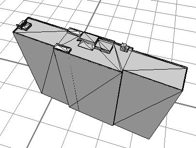
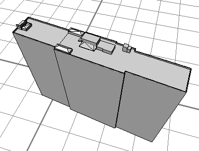
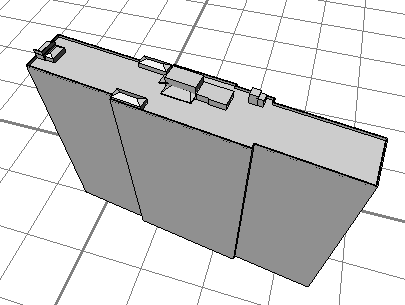

cleanupGeometry operation
Syntax
cleanupGeometry(components, tolerance)
Parameters
- components (selector)
What components to clean up:vertices Merges vertices and removes collinear vertices. edges Merges vertices and removes shared edges between coplanar faces. faces Merges vertices and removes duplicate faces and degenerate faces with small area. all Cleans up all components. - tolerance (float)
Controls the rigorousness of the cleanup operation. Valid values are in the range [0, 1].0 Only cleans up matching components. Vertices must be identical, edges collinear, faces coplanar or with zero area in order to be removed. 1 Vertices up to a distance of 1m are merged. Edges with intermediate angles up to 10 degrees are considered collinear. Normals with intermediate angles up to 10 degrees are considered coplanar. Faces with area up to 1m² are removed. [0, 1] For values in-between 0 and 1 linear interpolation is applied.
Description
The cleanupGeometry operation cleans up the current shape's geometry.
The intent of this operation is to optimize the mesh data structure of the geometry without the intent to change the appearance of the model. The polygon and vertex count may be reduced.
The cleanup can be necessary for subsequent CGA operations. For example, setNormals and softenNormals operations require duplicate vertices to be merged in order to compute vertex normals using adjacent face normals.
Because discontinuous textures coordinates are preserved cleanup steps could be disabled. In some cases it might be useful to delete the UV coordinates beforehand.
Because existing component tags are preserved, tagged edges and edges between faces with different tags will not be removed. In some cases it might be useful to delete tags beforehand. See this section for more details.
Related
- convexify operation
- innerRectangle operation
- deleteUV operation
- deleteTags operation
- reduceGeometry operation
- reverseNormals operation
- setNormals operation
- softenNormals operation
Examples
Cleaning up a triangulated asset
 |
Init-->
i("myHouse.dae")
The original asset (464 faces, 758 vertices).
|
 |
Init-->
i("myHouse.dae")
cleanupGeometry(all, 0)
Mild cleanup removes most disturbing edges (190 faces, 752 vertices).
|
 |
Init-->
i("myHouse.dae")
cleanupGeometry(all, 0.1)
Increasing the tolerance gets rid of the remaining nasty edges (146 faces, 616 vertices).
|
Copyright ©2008-2023 Esri R&D Center Zurich. All rights reserved.